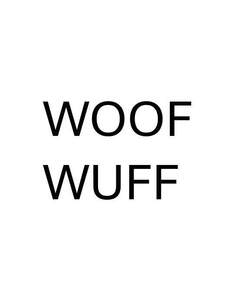

Trade Mark Journal No.2025/048 28 November 2025
UK00004291530 9 November 2025 (3,5,21,31,35)
Mark 1
WOOFWUFF
Mark 2
WOOF WUFF
Mark 3

- Class 3
- Non-medicated cosmetics and toiletry preparations; non-medicated dentifrices; perfumery, essential oils; bleaching preparations and other substances for laundry use; cleaning, polishing, scouring and abrasive preparations; animal grooming preparations; hand cleansers; breath fresheners for animals; non-medicated mouth washes for pets; cosmetics for animals; deodorants for pets; pet odour removers; odour fresheners for animals; pet stain removers; pet shampoos; shampoo for animals; bath preparations for animals; skin care products for animals; non medicated paw balms for pets; dental care preparations for animals; conditioning sprays for animals; cologne impregnated disposable wipes; moist wipes for sanitary and cosmetic purposes; cleaning wipes; dog ear cleaners; cotton buds; cotton wool pads; dog tear stain removers; essential oils; natural fragrances; styptic powder; aromatherapy oil; aromatic essential oils; aromatic oils; aromatic plant extracts; aromatics [essential oils]; aromatics for fragrances; aromatics for perfumes; balms other than for medical purposes; balms, other than for medical purposes; bar soap; bars of soap; base cream; bath foam; bath foams; bath foams (non-medicated -); bath gel; bath gels; bath gels (non-medicated -); bath herbs; bath lotion; bath lotions (non-medicated -); bath oil; bath oil, not for medical use; bath oils; air fragrance preparations; air fragrancing preparations; alkali (volatile -) [ammonia] detergent; almond oil; almond soap; almond soaps; aloe soap; aloe vera gel for cosmetic purposes; aloe vera preparations for cosmetic purposes; amber [perfume].
- Class 5
- Pharmaceuticals, medical and veterinary preparations; dietetic food and substances adapted for medical or veterinary use; dietary supplements for animals; nutritional preparations and substances; dietary supplements, food supplements and herbal preparations; dietetic foods and substances; vitamin and vitamin preparations; mineral and mineral preparations; dietary supplements for pets; vitamins for animals; pet lotions; pet washes; repellents for pets; eye washes; anti-chew preparations; pet ear cleaner; medicated pet tear stain remover; sanitizing wipes; anti itch preparations for pets; dietary pet supplements in the form of pet treats; absorbent cotton; absorbent cotton wadding; absorbent diapers of paper for pets; absorbent sanitary articles; adhesive bandages for skin wounds; air purifying preparations; alcohol for topical use; aloe vera gel for therapeutic purposes; animal repellents; animal washes; animal washes [insecticides]; anti fly lotion; antibacterial gels; antibacterial handwash; antibacterial pharmaceuticals; anti-bacterial preparations; anti-bacterial soap; antibiotic food supplements for animals; antibiotics; antibiotics for fish; antibiotics for veterinary use; anti-horsefly oils; anti-infective preparations for veterinary use; anti-infective products for veterinary use; anti-inflammatories; anti inflammatory gels; anti-insect sprays; anti-microbial preparations; anti-oxidant supplements; anti-oxidants obtained from herbal sources; anti-parasitic collars; antiparasitic collars for animals; anti-parasitic collars for animals; antiparasitic preparations; antiparasitic preparations for pets; antiparasitic preparations from chemical sources; antiparasitic preparations from plant sources; antiparasitics; antiseptic cleansers; antiseptic cotton; antiseptic liquid bandages; antiseptic mouthwashes; antiseptic mouthwashes for rinsing; antiseptic ointments; antiseptic preparations; antiseptics; aquatic algaecide; aseptic cotton; bacteriological preparations for veterinary purposes; balms for pharmaceutical purposes; barks for pharmaceutical purposes; bee pollen for use as a dietary food supplement; biocides; calcium supplements; calomel [fungicide]; casein dietary supplements; castor oil for medical purposes; cat repellents; cattle washes; cedar wood for use as an insect repellent; chemical reagents for veterinary use; chemicals for pharmaceutical use; chondroitin preparations; clay for pharmaceutical use; cod liver oil; collars for animals (antiparasitic); cooling sprays for medical purposes; cotton swabs for medical purposes; cotton wool for medical purposes; deodorants for clothing; deodorants, other than for human beings or for animals; deodorizers for litter trays; dietary and nutritional supplements; dietary food supplements; dietary pet supplements in the form of pet treats; dietary supplements for animals; dietary supplements for pets; dietary supplements for pets in the nature of a powdered drink mix; dietetic substances adapted for veterinary use; digestants; disinfectants; disinfectant soap; disposable diapers; dog lotions for veterinary purposes; dog washes [insecticides]; dogs (repellents for -); ear drops; edible fish oils for medical purposes; extracts of medicinal herbs; extracts of medicinal plants; eye drops; eye lotions for medical use; eye ointment for medical use; eye-washes; feed supplements for veterinary use; feeding stimulants for animals; fish meal for pharmaceutical purposes; fish oil for medical purposes; flea collars; flea exterminating preparations; flea powders; flea sprays; fodder supplements for veterinary purposes; food supplements; food supplements for veterinary use; freeze dried food adapted for medical purposes; fungicides for killing vermin; glucose dietary supplements; gummy vitamins; health food supplements for persons with special dietary requirements; health food supplements made principally of minerals; health food supplements made principally of vitamins; herb teas for medicinal purposes; herbal sore skin ointments for pets; insect attractants; insect repellent agents; insect repellent preparations; insect repellents; insecticides; insect repellents; larvae inhibiting preparations; linseed dietary supplements; linseed oil dietary supplements; liquid herbal supplements; liquid vitamin supplements; medicinal herb extracts; medicinal herb infusions; medicinal herbs; medicinal oils; medicinal ointments; medicinal preparations and substances; medicines for animals; mildew destroying preparations; mineral food supplements; mineral nutritional supplements; mixed vitamin preparations; moist wipes impregnated with a pharmaceutical lotion; mosquito repellents; mouthwashes for medical purposes; multivitamin preparations; nail fungus treatment preparations; nail sanitizing preparations; natural biocides; naturally derived antimicrobials for dermatological use ; nose drops ; nutraceuticals for use as a dietary supplement; nutritional supplements; nutritional supplements for livestock feed; nutritional supplements for veterinary use; odour neutralizing preparations for clothing and textiles; oil (cod liver -); oils (medicinal -); ointments for pharmaceutical purposes; parasiticides; pastilles for pharmaceutical purposes; pesticides; pet odour neutralizer; pet odour neutraliser; petroleum jelly for veterinary use; pharmaceutical preparations for animals; pharmaceutical preparations for the treatment of worms in pets; pharmaceutical preparations for veterinary use; pharmaceutical products for skin care for animals; pharmaceuticals; plant and herb extracts for medicinal use; plant extracts for pharmaceutical purposes; preparations for deodorising the air; preparations for destroying mice; preparations for destroying noxious animals; preparations for destroying noxious plants; preparations for destroying parasites; preparations for destroying vermin; preparations for the neutralising of odours; preparations of vitamins; probiotic supplements; reagents for use in analysis [for veterinary purposes]; repellents for animals; repellents for dogs; repellents (insect -); sanitary preparations for veterinary use; tonics for medical use; tonics [medicines]; topical gels for medical and therapeutic use; topical ophthalmic anti-infective substances for the treatment of infections; vaccines for cattle; vaccines for horses; vitamin a preparations; vitamin and mineral food supplements; vitamin and mineral supplements; vitamin and mineral supplements for pets; vitamin supplements for animals; witch hazel. .
- Class 21
- Brush-making materials; articles for cleaning purposes; household utensils and containers; combs and sponges; brushes, except paintbrushes; brushes for pets; brushes for grooming pet animals; deshedding brushes for pets; electric pet brushes; fur brushes for animals; pet grooming glove; animal grooming gloves; parts and fittings for the aforesaid.
- Class 31
- Foodstuffs and beverages for animals; foodstuffs for animals; animal feeds; animal beverages; animal biscuits; sweet biscuits for consumption by animals; savoury biscuits for consumption by animals; edible treats for animals; chews for animals (edible -); edible chewing products for domestic animals; foodstuffs for pet animals; pet food; pet foodstuffs; food (pet -); pet food for dogs; pet food for cats; pet food for rabbits; pet food for birds; pet food for small animals; pet beverages; edible pet treats; pet foods in the form of chews; edible bones and sticks for pets; animal litter; woodshavings for use as animal litter; woodshavings for use as animal bedding. .
- Class 35
- Retail services connected with the sale of pet products; online retail services connected with the sale of pet products; retail services connected with the sale of non-medicated cosmetics and toiletry preparations, non-medicated dentifrices, perfumery, essential oils, bleaching preparations and other substances for laundry use, cleaning, polishing, scouring and abrasive preparations, animal grooming preparations, hand cleansers, breath fresheners for animals, non-medicated mouth washes for pets, cosmetics for animals, deodorants for pets, pet odour removers, odour fresheners for animals, pet stain removers, pet shampoos, shampoo for animals, bath preparations for animals, skin care products for animals, non-medicated paw balms for pets, dental care preparations for animals, conditioning sprays for animals, cologne impregnated disposable wipes, moist wipes for sanitary and cosmetic purposes, cleaning wipes, dog ear cleaners, cotton buds, cotton wool pads, dog tear stain removers, essential oils, natural fragrances, styptic powder, aromatherapy oil, aromatic essential oils, aromatic oils, aromatic plant extracts, aromatics, aromatics [essential oils], aromatics for fragrances, aromatics for perfumes, balms other than for medical purposes, balms, other than for medical purposes, bar soap, bars of soap, base cream, bath foam, bath foams, bath foams (non-medicated -), bath gel, bath gels, bath gels (non-medicated -), bath herbs, bath lotion, bath lotions (non medicated -), bath oil, bath oil, not for medical use, bath oils, air fragrance preparations, air fragrancing preparations, alkali (volatile -) [ammonia] detergent, almond oil, almond soap, almond soaps, aloe soap, aloe vera gel for cosmetic purposes, aloe vera preparations for cosmetic purposes, amber [perfume]; retail services connected with the sale of pharmaceuticals, medical and veterinary preparations, dietetic food and substances adapted for medical or veterinary use, dietary supplements for animals, nutritional preparations and substances, dietary supplements, food supplements and herbal preparations, dietetic foods and substances, vitamin and vitamin preparations, mineral and mineral preparations, dietary supplements for pets, vitamins for animals, pet lotions, pet washes, repellents for pets, eye washes, anti-chew preparations, pet ear cleaner, pet tear stain remover, sanitizing wipes, anti itch preparations for pets, dietary pet supplements in the form of pet treats, absorbent cotton, absorbent cotton wadding, absorbent diapers of paper for pets, absorbent sanitary articles, adhesive bandages for skin wounds, air purifying preparations, alcohol for topical use, aloe vera gel for therapeutic purposes, animal repellents, animal washes, animal washes [insecticides], anti fly lotion, antibacterial gels, antibacterial handwash, antibacterial pharmaceuticals, anti-bacterial preparations, anti-bacterial soap, antibiotic food supplements for animals, antibiotics, antibiotics for fish, antibiotics for veterinary use, anti-horsefly oils, anti-infective preparations for veterinary use, anti-infective products for veterinary use, anti-inflammatories, anti-inflammatory gels, anti-insect sprays, anti-microbial preparations, anti-oxidant supplements, anti-oxidants obtained from herbal sources, anti-parasitic collars, antiparasitic collars for animals, anti-parasitic collars for animals, antiparasitic preparations, antiparasitic preparations for pets, antiparasitic preparations from chemical sources, antiparasitic preparations from plant sources, antiparasitics, antiseptic cleansers, antiseptic cotton, antiseptic liquid bandages, antiseptic mouthwashes, antiseptic mouthwashes for rinsing, antiseptic ointments, antiseptic preparations, antiseptics, aquatic algaecide, aseptic cotton, bacteriological preparations for veterinary purposes, balms for pharmaceutical purposes, barks for pharmaceutical purposes, bee pollen for use as a dietary food supplement, biocides; retail services connected with the sale of calcium supplements, calomel [fungicide],casein dietary supplements, castor oil for medical purposes, cat repellents, cattle washes, cedar wood for use as an insect repellent, chemical reagents for veterinary use, chemicals for pharmaceutical use, chondroitin preparations, clay for pharmaceutical use, cod liver oil, collars for animals (antiparasitic -), cooling patches for medical use, cooling sprays for medical purposes, cotton swabs for medical purposes, cotton wool for medical purposes, deodorants for clothing, deodorants, other than for human beings or for animals, deodorizers for litter trays, dietary and nutritional supplements, dietary food supplements, dietary pet supplements in the form of pet treats, dietary supplements for animals, dietary supplements for pets, dietary supplements for pets in the nature of a powdered drink mix, dietetic substances adapted for veterinary use, digestants, disinfectants, disinfectant soap, disposable diapers, dog lotions for veterinary purposes, dog washes [insecticides], dogs (repellents for -),ear drops, edible fish oils for medical purposes, extracts of medicinal herbs, extracts of medicinal plants, eye drops, eye lotions for medical use, eye ointment for medical use, eye-washes, feed supplements for veterinary use, feeding stimulants for animals, fish meal for pharmaceutical purposes, fish oil for medical purposes, flea collars, flea exterminating preparations, flea powders, flea sprays, fodder supplements for veterinary purposes, food supplements, food supplements for veterinary use, freeze dried food adapted for medical purposes, fungicides for killing vermin, glucose dietary supplements, gummy vitamins, health food supplements for persons with special dietary requirements, health food supplements made principally of minerals, health food supplements made principally of vitamins, herb teas for medicinal purposes, herbal sore skin ointments for pets, insect attractants, insect repellent agents, insect repellent preparations, insect repellents, insecticides, insect repellents, larvae inhibiting preparations, linseed dietary supplements, linseed oil dietary supplements, liquid herbal supplements, liquid vitamin supplements; retail services connected with the sale of medicinal herb extracts, medicinal herb infusions, medicinal herbs, medicinal oils, medicinal ointments, medicinal preparations and substances, medicines for animals, mildew destroying preparations, mineral food supplements, mineral nutritional supplements, mixed vitamin preparations, moist wipes impregnated with a pharmaceutical lotion, mosquito repellents, mouthwashes for medical purposes, multivitamin preparations, nail fungus treatment preparations, nail sanitizing preparations, natural biocides, naturally derived antimicrobials for dermatological use, nose drops, nutraceuticals for use as a dietary supplement, nutritional supplements, nutritional supplements for livestock feed, nutritional supplements for veterinary use, odour neutralizing preparations for clothing and textiles, oil (cod liver -), oils (medicinal -), ointments for pharmaceutical purposes, parasiticides, pastilles for pharmaceutical purposes, pesticides, pet odour neutralizer, pet odour neutraliser, petroleum jelly for veterinary use, pharmaceutical preparations for animals, pharmaceutical preparations for the treatment of worms in pets, pharmaceutical preparations for veterinary use, pharmaceutical products for skin care for animals, pharmaceuticals, plant and herb extracts for medicinal use, plant extracts for pharmaceutical purposes, preparations for deodorising the air, preparations for destroying mice, preparations for destroying noxious animals, preparations for destroying noxious plants, preparations for destroying parasites, preparations for destroying vermin, preparations for the neutralising of odours, preparations of vitamins, probiotic supplements, reagents for use in analysis [for veterinary purposes], repellents for animals repellents for dogs, repellents (insect -), sanitary preparations for veterinary use, tonics for medical use, tonics [medicines], topical gels for medical and therapeutic use, topical ophthalmic anti-infective substances for the treatment of infections, vaccines for cattle, vaccines for horses, vitamin a preparations, vitamin and mineral food supplements, vitamin and mineral supplements, vitamin and mineral supplements for pets, vitamin supplements for animals, witch hazel; retail services connected with the sale of collars, leashes and clothing for animals, pet clothing, pets (clothing for -), clothing for pets, clothing for domestic pets, garments for pets, pet leads, collars for pets, electronic pet collars, bags for carrying pets, clothing for animals, animal leads, animal collars, animal harnesses, bags for carrying animals, parts and fittings for the aforesaid; retail services connected with the sale of brush-making materials, articles for cleaning purposes, household utensils and containers, combs and sponges, brushes, brushes for pets, brushes for grooming pet animals, deshedding brushes for pets, electric pet brushes, fur brushes for animals, pet grooming glove, animal grooming gloves, parts and fittings for the aforesaid; retail services connected with the sale of games, toys and playthings, toys, games and playthings for pet animals, toys and playthings for pets, toys and playthings for pet animals, pet toys, toys for pets, toys for pet animals, toys for animals, toys for domestic pets, pet toys made of rope, rope for use in toys for pets, sports equipment for pets, ball launchers for pets, parts and fittings for the aforesaid; retail services connected with the sale of foodstuffs and beverages for animals, foodstuffs for animals, animal feeds, animal beverages, animal biscuits, sweet biscuits for consumption by animals, savoury biscuits for consumption by animals, edible treats for animals, chews for animals (edible -), edible chewing products for domestic animals, foodstuffs for pet animals, pet food, pet foodstuffs, food (pet -), pet food for dogs, pet food for cats, pet food for rabbits, pet food for birds, pet food for small animals, pet beverages, edible pet treats, pet foods in the form of chews, edible bones and sticks for pets, animal litter, woodshavings for use as animal litter, woodshavings for use as animal bedding; information and advice in relation to the aforesaid . .
A & D Enterprises Limited